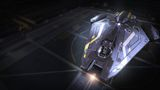

Макс. скорость / форсаж
316 / 395 м/с (быстро)
Классический боевой корабль для новичка. Форсаж до 395 м/с и четыре точки подвески дают отличную огневую мощь за свои деньги. За корпус дешевле 100 тыс. кр. страховой выкуп ничтожен, поэтому на нём удобно учиться агрессивному бою. Слабая защита и тесные отсеки выдают корабль начального уровня. Он побеждает скоростью и напором, а не обменом попаданиями.

Пригодность корабля оценивается по шкале 1–100 при полностью доработанном инженерами оснащении для этой роли, в сравнении со всеми конкурентами. См. как оцениваются корабли.
Viper Mk III — бюджетный перехватчик Faulcon DeLacy и один из самых дешёвых настоящих боевых кораблей в игре. Он создан для скорости: разгоняется на форсаже почти до 400 м/с и несёт четыре орудия — два средних и два малых. Этот маленький, но опасный преследователь догоняет цель и открывает огонь, прежде чем она успеет отреагировать. И всё это дешевле 100 тыс. кр.
Ограничения ожидаемы: тонкая броня, скромные щиты, два внешних крепления и тесные отсеки не дают долго обмениваться попаданиями или носить много защиты. Viper Mk III — хрупкий перехватчик: быстрый и агрессивный, но уязвимый. Многие пилоты начинают боевую карьеру именно на нём, учатся побеждать скоростью и напором, а потом переходят на более прочный корабль.
Недорогие, быстрые и агрессивные бои: зоны добычи низкой интенсивности, освоение перехвата и выбора приоритетных целей, а также бюджетная охота за головами, где скорость позволяет закончить бой, прежде чем пострадает тонкий корпус.
Четыре качества определяют Viper Mk III в боевой роли:
Тонкая броня, скромные щиты, два внешних крепления и силовая установка класса 3 не позволяют долго держать удар, нести много защиты или непрерывно стрелять. В затяжном бою он уступает всем более дорогим малым кораблям. Сильные стороны Viper Mk III — цена и скорость. Это быстрый дешёвый перехватчик для обучения, а не корабль, на котором стоит оставаться, если можете позволить себе лучший.
Форсаж до 395 м/с и четыре точки подвески делают его недорогим перехватчиком с хорошей огневой мощью. Тонкая броня, установка класса 3 и всего два внешних крепления ограничивают его роль начальным уровнем.
Итоговый балл 63/100 отражает результат по критериям боевой роли в порядке важности. У каждого критерия есть вес (доля от 100). Корабль набирает часть баллов по каждому критерию в зависимости от результата на фоне конкурентов. Баллы складываются в итоговую оценку.
| Критерий роли | Баллы | Обоснование |
|---|---|---|
| Точки подвески | 19/30 | Четыре точки подвески (2 средние, 2 малые) превосходят большинство кораблей за эти деньги, но все размера 2 или меньше. Большой точки нет, поэтому разовый залп и длительный урон заметно уступают Vulture (2L) и Cobra Mk V (3M 2S). |
| Распределитель энергии | 6/10 | Распределитель класса 3 питает четыре орудия и форсаж почти без запаса. Даже с ускоренной зарядкой G5 и сверхпроводниками заряд оружия быстро падает при длительной стрельбе. Хватает, но не более. |
| Щит | 8/15 | Базовый щит ~137 МДж при массе корпуса 50 т, после инженеров лишь ~450 МДж с одним двухконтурным щитом размера 3 и одним свободным креплением для усилителя. Скромно по сравнению с более дорогими малыми кораблями. |
| Броня и отсеки | 7/15 | Базовая броня 126 невелика. Один военный отсек размера 3 и тесные дополнительные отсеки (3·3·2·1·1·1) дают лишь ~550 эффективной брони после инженеров. Долго обмениваться попаданиями не получится. |
| Манёвренность | 18/20 | Штатные 316/395 м/с, свыше 480 м/с с грязной настройкой и форсированными двигателями плюс хорошая управляемость. Можно выбирать дистанцию боя и догонять цели, как и положено перехватчику. |
| Внешнее оснащение и гибкость | 5/10 | Всего 2 внешних крепления заставляют выбирать между усилителем щита и помехами. Вместе с малой площадкой и тесными внутренними отсеками простора для других ролей почти нет. |
| Итог с учётом весов | 63/100 | Совпадает с итоговой оценкой пригодности корабля к этой роли. |
Вес каждого критерия отражает редакционный порядок приоритетов роли, а не игровую формулу. Длина полосы показывает набранную долю баллов. Самые длинные полосы сильнее всего подняли оценку, самые короткие показывают слабые стороны. См. как оцениваются корабли.
Все таблицы сравнивают корабли именно в боевой роли, отдельно для каждого размера площадки. Столбец Точки подвески показывает набор точек подвески, основу вооружения. Оценка та же, что и на остальном сайте: по шкале 1–100.
| Корабль | Класс | Точки подвески | Плюсы и минусы | Оценка |
|---|---|---|---|---|
| Kestrel Mk II | Малый | 3L 2S | Оценка выше; точки подвески; гибкостьБроня | 85 |
| Vulture | Малый | 2L | Оценка выше; манёвренность; щитБроня | 80 |
| Cobra Mk V | Малый | 3M 2S | Оценка выше; гибкость; точки подвескиРаспределитель | 78 |
| Imperial Courier | Малый | 3M | Оценка выше; манёвренность; щитБроня | 70 |
| Viper Mk IV | Малый | 2M 2S | Оценка выше; броня; распределительМанёвренность | 66 |
| Diamondback Explorer | Малый | 1L 2M | Оценка выше; гибкость; манёвренностьБроня | 65 |
| Viper Mk III этот | Малый | 2M 2S | — этот корабль (точка отсчёта) | 63 |
| Diamondback Scout | Малый | 2M 2S | Гибкость; броняОценка ниже; щит | 60 |
| Cobra Mk III | Малый | 2M 2S | Манёвренность; распределительОценка ниже; щит | 58 |
| Eagle Mk II | Малый | 3S | Манёвренность; точки подвескиОценка ниже; щит | 55 |
| Imperial Eagle | Малый | 1M 2S | Манёвренность; точки подвескиОценка ниже; гибкость | 54 |
| Cobra Mk IV | Малый | 2M 3S | Точки подвески; броняОценка ниже; манёвренность | 44 |
| Sidewinder Mk I | Малый | 2S | Манёвренность; гибкостьОценка ниже; точки подвески | 40 |
Оценены 13 боевых кораблей для малых площадок. Лидер — Kestrel Mk II (85). Все соперники этого класса садятся там же, где и этот корабль: это его прямые конкуренты.
| Корабль | Класс | Точки подвески | Плюсы и минусы | Оценка |
|---|---|---|---|---|
| Federal Corvette | Большой | 2H 1L 2M 2S | Оценка выше; точки подвески; распределительЩит | 98 |
| Imperial Cutter | Большой | 1H 2L 4M | Оценка выше; распределитель; щитМанёвренность | 91 |
| Anaconda | Большой | 1H 3L 2M 2S | Оценка выше; распределитель; щитМанёвренность | 88 |
| Imperial Clipper | Большой | 2L 2M | Оценка выше; манёвренность; распределительТочки подвески | 79 |
| Type-10 Defender | Большой | 4L 3M 2S | Оценка выше; точки подвески; броняМанёвренность | 78 |
Среди боевых кораблей для больших площадок (оценено 5) лидирует Federal Corvette (98). Им нужны более крупные площадки и бюджеты. По характеристикам они превосходят этот корабль, но относятся к другому посадочному классу.
| Корабль | Класс | Точки подвески | Плюсы и минусы | Оценка |
|---|---|---|---|---|
| Fer-de-Lance | Средний | 1H 4M | Оценка выше; манёвренность; точки подвескиБроня | 93 |
| Krait Mk II | Средний | 3L 2M | Оценка выше; точки подвески; броняРаспределитель | 90 |
| Python Mk II | Средний | 4L 2M | Оценка выше; точки подвески; распределительБроня | 90 |
| Mamba | Средний | 1H 2L 2S | Оценка выше; распределитель; точки подвескиБроня | 89 |
| Alliance Chieftain | Средний | 2L 1M 3S | Оценка выше; манёвренность; броняЩит | 88 |
| Alliance Challenger | Средний | 1L 3M 3S | Оценка выше; броня; щитМанёвренность | 86 |
| Corsair | Средний | 3L 3M | Оценка выше; распределитель; гибкостьМанёвренность | 85 |
| Federal Assault Ship | Средний | 2L 2M | Оценка выше; распределитель; манёвренностьЩит | 84 |
| Python | Средний | 3L 2M | Оценка выше; распределитель; гибкостьМанёвренность | 83 |
| Federal Gunship | Средний | 1L 4M 2S | Оценка выше; распределитель; броняМанёвренность | 82 |
| Alliance Crusader | Средний | 1L 2M 3S | Оценка выше; распределитель; броняМанёвренность | 80 |
| Federal Dropship | Средний | 1L 4M | Оценка выше; броня; точки подвескиМанёвренность | 76 |
| Krait Phantom | Средний | 2L 2M | Оценка выше; гибкость; манёвренностьБроня | 74 |
Среди боевых кораблей для средних площадок (оценено 13) лидирует Fer-de-Lance (93). Они дешевле и садятся на меньших площадках; могут быть выгоднее по показателям, но относятся к другому посадочному классу.
За ~97 тыс. кр. Viper Mk III почти даром: требований к рангу нет, страховой выкуп ничтожен. Даже с полным оснащением класса A и лёгкими инженерными улучшениями он остаётся одним из самых дешёвых боевых кораблей.
Выбор ради экономии и обучения: отрабатывайте навыки и получайте первые награды за головы почти без риска, затем переходите на более прочный корпус, когда сможете позволить себе обмен попаданиями.
Меньше 100 тыс. кр. за быстрый перехватчик с четырьмя орудиями и ничтожным выкупом. Классика для обучения агрессивному бою почти без риска.
Сборка для быстрого агрессивного перехватчика. Начальный вариант собирается простой покупкой; класс A — базовое боевое оснащение; инженерный следует общей боевой схеме с упором на скорость, потому что защита слабая.
| Отсек | Начальное · только покупка | Класс A · без инженеров | С инженерными улучшениями | Примечания |
|---|---|---|---|---|
| Точки подвески | ||||
| Средняя 1 | 2F Многоствольная пушка (на подвижном креплении) | 2F Многоствольная пушка (на подвижном креплении) | G5 Перегрузка + Коррозионные снаряды | Основное среднее орудие. Одной пушки с коррозионными снарядами достаточно, чтобы снизить сопротивление брони для всей батареи. |
| Средняя 2 | 2F Многоствольная пушка (на подвижном креплении) | 2F Многоствольная пушка (на подвижном креплении) | G5 Перегрузка + Автозарядка | Вторая средняя многоствольная пушка. Автозарядка убирает паузы в стрельбе, сохраняя постоянный урон. |
| Малая 1 | 1G Импульсный лазер (на подвижном креплении) | 1G Импульсный лазер (на подвижном креплении) | G5 Эффективность + Тепловой отвод | Импульсный лазер снимает щиты. Эффективность сильно снижает расход энергии и нагрев маленькой силовой установки, а Тепловой отвод охлаждает корабль. |
| Малая 2 | — | 1G Импульсный лазер (на подвижном креплении) | G5 Эффективность + Тепловой отвод | Второй импульсный лазер с эффективностью. Одинаковый экспериментальный эффект не даёт двум малым орудиям перегревать корабль при длительном огне. |
| Внешние крепления | ||||
| Крепление 1 | 0A Усилитель щита | 0A Усилитель щита | G5 Усиленная конструкция + Суперконденсаторы | Единственный усилитель щита, на который хватает креплений. Усиленная конструкция кратно увеличивает номинальную прочность двухконтурного щита в МДж. |
| Крепление 2 | — | 0I Пусковая установка помех | G1 Боезапас (без экспериментального эффекта) | Необязательно, низкий приоритет: улучшение боезапаса добавляет залпы помех. Помехи сбивают наведение подвижных орудий и турелей. |
| Основные модули | ||||
| Обшивка | Лёгкий сплав | Военный композит | G5 Усиленная конструкция + Глубокая обшивка | |
| Силовая установка | 3E Силовая установка | 3A Силовая установка | G5 Перегрузка + Рассеивание тепла | Установка класса 3 питает четыре орудия и щит без запаса. Перегрузка добавляет запас мощности, а рассеивание тепла убирает лишний нагрев. |
| Маневровые двигатели | 3E Маневровые двигатели | 3A Маневровые двигатели | G5 Грязная настройка двигателей + Форсированные двигатели | Сначала поставьте класс A: скорость — главное качество Viper. Грязная настройка двигателей с форсированными двигателями даёт на форсаже больше 480 м/с. |
| Рамочно-сместительный двигатель (FSD) | 3E Рамочно-сместительный двигатель (FSD) | 3A Рамочно-сместительный двигатель (FSD) | G3 Увеличенная дальность + Управление массой | Класс A, чтобы долететь до зон добычи и сдать награды. Улучшение дальности лишь G3: для боевого корабля огромные прыжки не нужны. |
| Система жизнеобеспечения | 2E Система жизнеобеспечения | 2D Система жизнеобеспечения | G5 Облегчение (без экспериментального эффекта) | Класс D экономит массу на скоростном корабле; Облегчение снижает её ещё сильнее. У системы жизнеобеспечения нет экспериментального эффекта. |
| Распределитель энергии | 3E Распределитель энергии | 3A Распределитель энергии | G5 Ускоренная зарядка + Сверхпроводники | Поставьте класс A пораньше: четыре орудия и форсаж быстро опустошают распределитель класса 3. Сверхпроводники увеличивают запас энергии на оружие. |
| Датчики | 3E Датчики | 3D Датчики | G5 Облегчение (без экспериментального эффекта) | Поставьте класс D и облегчение. Дальность датчиков в бою не нужна, лучше сэкономить массу ради скорости. |
| Топливный бак | 2C Топливный бак | 2C Топливный бак | (Чертёж недоступен) | Штатный бак размера 3: ёмкость фиксирована, инженерных улучшений нет. |
| Военные отсеки | ||||
| Военный 1 | 3E Усиление корпуса | 3D Усиление корпуса | G5 Усиленная конструкция + Глубокая обшивка | усиление корпуса с усиленной конструкцией в военном отсеке размера 3 — самый дешёвый способ заметно укрепить тонкую броню. |
| Дополнительные отсеки | ||||
| Размер 3 | 3E Генератор щита | 3C Генератор двухконтурного щита | G5 Усиление + Быстрая зарядка | Двухконтурный щит быстро восстанавливается между заходами, что подходит для тактики «ударил и ушёл». Усиление даёт максимум МДж, быстрая зарядка возвращает преимущество в скорости восстановления. |
| Размер 3 | — | 3A Накопитель щита | G4 Специализация (без экспериментального эффекта) | Необязательно, низкий приоритет: специализация снижает нагрев и скачок энергопотребления накопителя. Быстро восстанавливает щит в экстренной ситуации. |
| Размер 2 | — | 2D Усиление корпуса | G5 Усиленная конструкция + Глубокая обшивка | Второе усиление корпуса с усиленной конструкцией добавляет эффективную броню. |
| Размер 1 | — | 1D Усиление модулей | (Чертёж недоступен) | Усиление модулей распределяет урон пробивших броню попаданий по внутренним модулям; инженерных улучшений нет. |
| Размер 1 | — | 1A Накопитель щита | G4 Специализация (без экспериментального эффекта) | Необязательно, низкий приоритет: специализация снижает нагрев и скачок энергопотребления накопителя. Быстро восстанавливает щит в экстренной ситуации. |
| Размер 1 | — | 1D Усиление корпуса | G5 Усиленная конструкция + Глубокая обшивка | В последний отсек размера 1 входит ещё одно усиление корпуса с усиленной конструкцией. |
| Открытие в планировщике и экспорт | ||||
| Открыть в Coriolis | открыть | открыть | открыть | Открывается на coriolis.io одним нажатием. |
| Открыть в EDSY | открыть | открыть | открыть | Открывается на edsy.org одним нажатием. |
| Скопировать SLEF | Копирует исходные данные оснащения для этого варианта в формате SLEF. | |||
С тонкой бронёй и двумя внешними креплениями Viper Mk III выживает за счёт скорости и напора, а не за счёт стойкости. Поставьте двухконтурный щит и усиление корпусав военный отсек, но заканчивайте бои быстро и уходите, если щит упал.
Купите корпус (~97 тыс. кр.). Оставьте штатный лёгкий сплав в обшивке — пока оставьте её, а деньги потратьте на оружие и щит. Поставьте Генератор щита 3E, в военный отсек — Усиление корпуса 3E, а также Усилитель щита 0A.
На обе средние точки поставьте многоствольные пушки 2F на подвижных креплениях, на одну малую — Импульсный лазер 1G на подвижном креплении. Вторую малую точку и внешнее крепление для помех оставьте пустыми до перехода на класс A.
Сразу пользуйтесь скоростью: перехватите, ударьте и не ввязывайтесь в затяжные схватки.
Порядок перехода на класс A для бюджетного перехватчика:
Малые модули Viper Mk III, включая обшивкой и накопители щита, позволяют дёшево перейти на класс A по меркам боевых кораблей. От начальной сборки до уверенного перехватчика один шаг.
Общая боевая схема для бюджетного перехватчика. Закрепите чертежи, чтобы применять улучшения G1→G5 удалённо. За экспериментальными эффектами летите к инженерам лично.
| Модуль | Чертёж | Экспериментальный эффект | Инженер |
|---|---|---|---|
| Маневровые двигатели (3) | Грязная настройка двигателей (G5) | Форсированные двигатели | Professor Palin / Mel Brandon |
| Силовая установка (3) | Перегрузка (G5) | Рассеивание тепла | Hera Tani |
| многоствольные пушки | Перегрузка (G5) | Коррозионные снаряды (одна пушка) / автозарядка (остальные) | Tod McQuinn |
| Импульсные лазеры | Эффективность (G5) | Тепловой отвод | Broo Tarquin |
| Распределитель энергии (3) | Ускоренная зарядка (G5) | Сверхпроводники | The Dweller |
| Двухконтурный щит (3) | Усиление (G5) | Быстрая зарядка | Lei Cheung |
| Усилитель щита | Усиленная конструкция (G5) | Суперконденсаторы | Didi Vatermann |
| Обшивка | Усиленная конструкция (G5) | Глубокая обшивка | Selene Jean |
| Усиление корпуса | Усиленная конструкция (G5) | Глубокая обшивка | Selene Jean |
Небольшой: все модули малых размеров, поэтому это одна из самых дешёвых боевых сборок по материалам. Если запасы собраны, остаётся их потратить. При необходимости запросите точные количества для каждого чертежа.
Примерное изменение характеристик по трём вариантам (цифры ориентировочные):
| Параметр | Начальное | Класс A | С инженерными улучшениями |
|---|---|---|---|
| Макс. скорость (форсаж) | 395 м/с | 395 м/с | ~480 м/с |
| Щит (МДж) | ~180 | ~250 | ~450 |
| Броня (эффективная) | ~210 | ~560 | ~900 |
| Длительный урон в секунду | средний | средний | средний |
| Прочность | низкая | умеренная | хорошая |
Главное изменение — прирост брони. При переходе на класс A штатный лёгкий сплав меняется на военный композит. Затем усиленная конструкция G5 с глубокой обшивкой и три усиления корпуса поднимают эффективную броню почти до 900. После инженеров Viper Mk III — перехватчик с форсажем до 480 м/с, рабочим щитом, четырьмя орудиями и корпусом, который не разваливается сразу после падения щита. Он быстрый, опасный и прочнее, чем кажется по размеру. Всё ещё побеждает скоростью и напором, но теперь выдерживает достаточно попаданий, чтобы закончить бой.
Подойдёт любая зона добычи низкой или средней интенсивности рядом с аванпостом. В окрестностях домашней базы это почти бесплатный способ получить первые награды и освоить агрессивный бой.
Viper Mk III — дешёвый перехватчик: быстрый, агрессивный, с четырьмя орудиями, и корпус стоит почти ничего. Слабая защита и тесные отсеки оставляют его бюджетным вариантом. Но мало на каком другом корабле столько пилотов начинали боевую карьеру, позволяя освоить бой на скорости и напоре почти без риска. Классический первый истребитель.
Данные на странице сверены с источниками ниже.